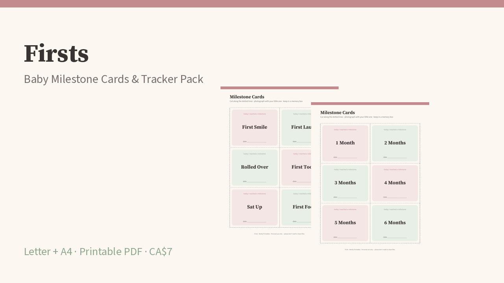

Little moments, gently kept.
36 printable milestone cards plus 6 blanks, and calm trackers for growth, feeding, naps and appointments. For every family. Letter + A4.
Get the full pack — CA$7
Inside (16 pages)
- 6 milestone card sheets (firsts + monthly cards 1 month–1 year), 1 blank sheet
- Monthly growth log
- Feeding notes (personal notes, not medical advice)
- Nap & sleep log
- Appointment log + questions for your provider
- Monthly snapshot, blank tracker master, notes
Free sample
Download 1 milestone card sheet (PDF)
Get all 16 pagesBently Printables · Personal use only · Not medical advice.